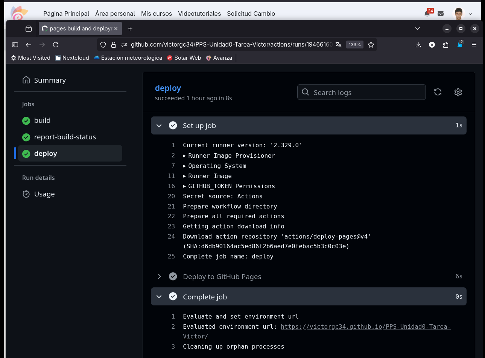
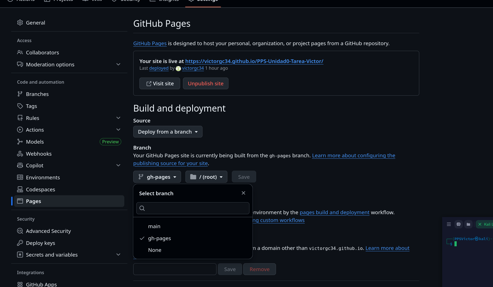

Creación de WorkFlow de GitHub Actions y Vinculación con GitHub Pages
GitHub Actions es una herramienta de automatización que permite ejecutar tareas de forma automática dentro de un repositorio, como compilar, probar o desplegar un proyecto. GitHub Pages, por su parte, es un servicio que permite publicar sitios web directamente desde GitHub. Al crear un workflow y vincularlo con GitHub Pages, automatizaremos el proceso de construcción y despliegue de una página, facilitando una publicación continua y sin intervención manual.
Este apartado constará de diferentes pasos, entre ellos:
- Configuración de los diferentes archivos del repositorio
- Vinculación de Workflow y Github Pages
1.0 Configuración de los diferentes archivos del repositorio
En este apartado, veremos los diferentes archivos que debemos de configurar para que nuestra automatización de la documentación funcione correctamente. Para ello, tendremos que modificar los siguientes archivos:
- mkdocs.yml: es el archivo de configuración principal de MkDocs, el cual utilizaremos para definir el nombre del sitio como la estructura que tendrá nuestra documentación. Los parámetros de configuración que utilizaremos serán los siguientes:
- site_name: este nos define el nombre principal del sitio de documentación.
- nav: establece la estructura de la lista de enlaces y el orden de aparición.
- doc_dir: indica la carpeta donde se encontrarán nuestra documentación en Markdown,

- deploy_docs.yml: este es el encargado de construir y desplegar la documentación de un proyecto. La ruta de este debe ser
.github/workflows/deploy_docs.yml. En este caso, el código que encontraremos en este será el siguiente:
# -----------------------------------------------------------
# CONFIGURACIÓN DEL WORKFLOW
# -----------------------------------------------------------
name: Deploy MkDocs # Define el nombre de este flujo de trabajo (aparece en la pestaña 'Actions' de GitHub).
on:
# Define el evento que dispara este flujo de trabajo.
push:
# Este workflow se ejecutará automáticamente cada vez que se haga un 'push' (subida)
# de código al repositorio.
branches:
- main # Específicamente, solo se ejecuta si el push se realiza sobre la rama 'main'.
# -----------------------------------------------------------
# PERMISOS
# -----------------------------------------------------------
# Otorga permisos específicos al GITHUB_TOKEN que se usará en este workflow.
permissions:
contents: write # Permite que el token pueda leer y escribir contenido (necesario para la rama gh-pages).
pages: write # Permite gestionar y escribir en la configuración de GitHub Pages.
id-token: write # Permite solicitar tokens de OpenID Connect (necesario para algunas integraciones de seguridad).
# -----------------------------------------------------------
# DEFINICIÓN DEL TRABAJO (JOB)
# -----------------------------------------------------------
jobs:
deploy: # Define un único trabajo llamado 'deploy'.
runs-on: ubuntu-latest # Especifica que este trabajo se ejecutará en un servidor virtual con la última versión de Ubuntu.
steps: # La secuencia de comandos o acciones a ejecutar en el servidor de Ubuntu.
# -------------------------------------------------------
# PASO 1: OBTENER EL CÓDIGO FUENTE
# -------------------------------------------------------
- name: Checkout Repo # Nombre descriptivo del paso.
# Utiliza una acción oficial de GitHub para clonar el repositorio
# completo en el entorno de trabajo del Runner.
uses: actions/checkout@v3
# -------------------------------------------------------
# PASO 2: CONFIGURAR PYTHON
# -------------------------------------------------------
- name: Tarea0 # Nombre descriptivo del paso.
# Utiliza una acción oficial para configurar el entorno de Python.
uses: actions/setup-python@v4
with:
python-version: '3.x' # Especifica que se debe usar la última versión de Python 3.
# -------------------------------------------------------
# PASO 3: INSTALAR DEPENDENCIAS
# -------------------------------------------------------
- name: Install dependencies # Nombre descriptivo del paso.
# Comando que se ejecuta en la terminal de Ubuntu.
# Instala el generador de documentación MkDocs (necesario para el siguiente paso).
run: pip install mkdocs
# -------------------------------------------------------
# PASO 4: CONSTRUIR Y DESPLEGAR LA DOCUMENTACIÓN
# -------------------------------------------------------
- name: Deploy docs # Nombre descriptivo del paso.
# Comando que se ejecuta en la terminal.
# 1. 'mkdocs gh-deploy': Construye la documentación (generando los archivos HTML/CSS/JS).
# 2. '--force': Sube esos archivos generados y fuerza su publicación en la rama 'gh-pages'.
run: mkdocs gh-deploy --force
# Configuración de variables de entorno específicas para este paso.
env:
# Pasa el Token de GitHub. MkDocs lo necesita para autenticarse y subir
# los archivos a la rama 'gh-pages' del repositorio.
GH_TOKEN: ${{ secrets.GITHUB_TOKEN }}
2.0 Vinculación de Workflow y Github Pages
En este apartado, veremos los logs creados y activaremos nuestros Github Pages en el repositorio.
Lo primero que haré será visualizar los logs que se han generado. Para ello, tendremos que ir al apartado de Actions/deploy, en el cual veremos como se ha generado de manera correcta el MkDocs.

Lo último que haremos será la activación de nuestro Github Pages, por lo que tendremos que ir al repositorio y dentro del apartado de Settings/Pages , tendremos que establecer la “rama” de “Build and deployment” en “gh-pages” .

Por último, desde la página del repositorio principal, podremos acceder a nuestro github-pages y entrar en nuestra web creada automáticamente a partir de MkDocs.